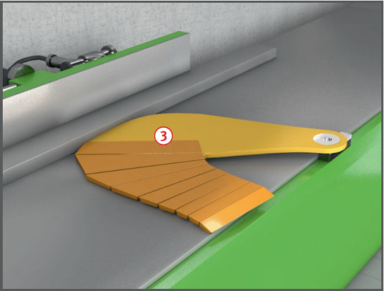
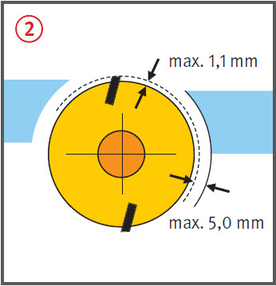
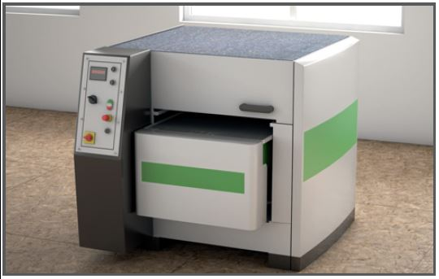
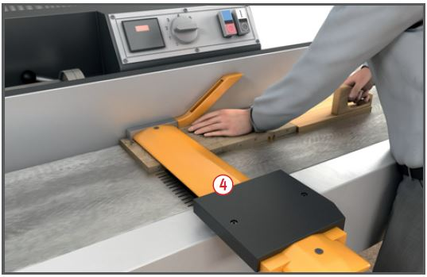

Es kann zu Verletzungen durch Rückschlag des Werkstückes und zu einer Schädigung des Gehörs kommen.
Es kann zu Schnittverletzungen kommen.
Schutzmaßnahmen
Betriebsanleitung des Herstellers beachten.
Unterweisung anhand der Betriebsanweisung.
Gehörschutz und Sicherheitsschuhe benutzen. Lärmbereiche kennzeichnen.
Eng anliegende Kleidung tragen.
Nur Hobelmessersätze mit
gleichen Abmessungen und
gleichem Gewicht einsetzen
(Unwuchtgefahr).
Gleichmäßigen Messerüberstand
gegebenenfalls mit Lehre
einstellen.
Hobelmesser vor dem Einbau
reinigen.
Auf formschlüssige Hobelmesserbefestigung achten, wenn die Messerwellenbreite geringer als der dreifache Durchmesser des Schneidenflugkreises ist.
Befestigungsschrauben nur
mit zugehörigem Werkzeug in
der Reihenfolge von der Mitte
nach außen anziehen.
Vor jedem Messerwechsel und
vor Reinigungs- und Wartungsarbeiten Maschinen gegen Einschalten
sichern.
Maschine nur mit wirksamer
Absaugung betreiben .
Splitter, Späne und Abfälle
nicht mit der Hand aus dem
Gefahrbereich entfernen.
Auch bei kurzen Unterbrechungen
Maschine abschalten.

Zusätzliche Hinweise für Abrichthobelmaschinen
Hobelmesserwellen in Klappenbauweise
sind unzulässig.
Beim Einsetzen der Messer auf
max. 1,1 mm Schneidenüberstand
achten .
Einspanntiefe von nachschleifbaren
Hobelmessern mit kraftschlüssiger
Befestigung gemäß
Herstellerangabe. Bei Hobelmessern
ohne Angabe der Einspanntiefe
mindestens 15 mm.
Abstand zwischen Schneidenflugkreis
und Tischlippen höchstens
5 mm .



Nicht zum Arbeitsgang erforderliche
Messerwellenteile vor
und hinter dem Anschlag durch
Schutzeinrichtungen, z. B.
schwenkbare Messerwellenverdeckungen , Klappenverdeckungen oder Schutzbrücke , verdecken.
Beim Werkstückvorschub
Hände flach auf das Werkstück
legen, Finger nicht spreizen.
Werkstückkanten nicht umfassen.
Fügeleiste und Hilfsanschlag zum Abrichten und Fügen
schmaler Werkstücke benutzen.
Zuführlade bei Maschinen mit
Klappen- und Schwingschutz.
Einsetzarbeiten nur mit Rückschlagsicherung
ausführen.
Zusätzliche Hinweise für
Dickenhobelmaschinen
Antriebselemente und Messerwelle
gegen Berührung sichern.
Werkstückrückschläge durch
intakte Greiferrückschlagsicherungen
verhindern. Greifer müssen
frei beweglich und dürfen
nicht abgenutzt sein.
Falls die Werkstücke unterschiedlich dick sind, dürfen bei starren Einzugswalzen und Druckbalken nur zwei Werkstücke gleichzeitig bearbeitet werden. Dabei sind die Werkstücke an den Außenseiten der Einschuböffnung zuzuführen. Bei Maschinen mit Gliedereinzugswalzen und Gliederdruckbalken dürfen mehrere Werkstücke gleichzeitig bearbeitet werden.
Bei Störungen nicht in den
Rückschlagbereich hineinsehen.
Zusätzliche Hinweise für Handhobelmaschinen
Auf sichere Werkstückauflage achten.
Sicheren Standplatz einnehmen.
Bei stationärem Einsatz Anschlag- und Werkzeugverdeckung verwenden.
Verstopfung der Späneauswurföffnung erst nach Stillstand beheben, vorher Netzstecker ziehen.
Maschine stets mit beiden Händen führen.
Zusätzliche Hinweise für kombinierte Abricht- und Dickenhobelmaschinen
Aufgeklappte Tische gegen Zurückfallen sichern.
Bei Verwendung als Dickenhobelmaschine Abdeckung montieren.
Arbeitsmedizinische Vorsorge
Arbeitsmedizinische Vorsorge
nach Ergebnis der Gefährdungsbeurteilung
veranlassen (Pflichtvorsorge)
oder anbieten (Angebotsvorsorge).
Hierzu Beratung
durch den Betriebsarzt.
Beschäftigungsbeschränkungen
Jugendliche über 15 Jahre dürfen nur unter Aufsicht eines Fachkundigen und wenn es die Berufsausbildung erfordert an den Hobelmaschinen arbeiten.
Jugendliche unter 15 Jahre
dürfen nicht an diesen Maschinen beschäftigt werden.